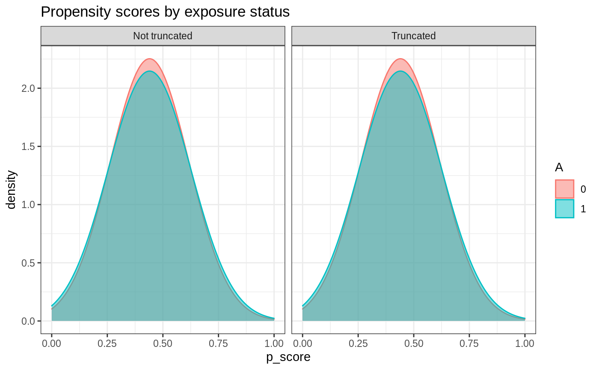

Define a base R6Class for later subclasses inheritance of
AIPW_base$calculate_result() and AIPW_base$plot.p_score()
Format
R6Class object.
Value
AIPW base object
Public fields
nNumber of observations
obs_estComponents for estimating the influence functions of all observations to calculate average causal effects
estimatesRisk difference, risk ratio, odds ratio and variance-covariance matrix for SE calculation
resultA matrix contains RD, RR and OR with their SE and 95%CI
g.plotA density plot of propensity scores by exposure status (ggplot2::geom_density)
Methods
Public methods
Method new()
Create a new AIPW_base object.
Usage
AIPW_base$new(Y = NULL, A = NULL, verbose = FALSE)
Arguments
YOutcome (binary integer: 0 or 1)
AExposure (binary integer: 0 or 1)
verboseWhether to show progression bar and print the result (logical; Default = FALSE)
Returns
A new AIPW_base obejct
Method calculate_result()
Calculate average causal effects in RD, RR and OR in the fitted AIPW obejct with the estimated influence functions
Usage
AIPW_base$calculate_result(g.bound = 0.025)
Arguments
g.boundValue between [0,1] at which the propensity score should be truncated. Defaults to 0.025.
Returns
An AIPW object with average treatment effect estimations in RD, RR and OR
Examples
library(SuperLearner) aipw_sl <- AIPW$new(Y=rbinom(100,1,0.5), A=rbinom(100,1,0.5), W.Q=rbinom(100,1,0.5), W.g=rbinom(100,1,0.5), Q.SL.library="SL.mean",g.SL.library="SL.mean", k_split=1,verbose=FALSE)$fit() aipw_sl$calculate_result(g.bound=0.025)
Method plot.p_score()
Plot and check the balance of propensity scores by exposure status
Usage
AIPW_base$plot.p_score()
Returns
g.plot A density plot of propensity scores by exposure status (ggplot2::geom_density)
Examples
library(SuperLearner) library(ggplot2) aipw_sl <- AIPW$new(Y=rbinom(100,1,0.5), A=rbinom(100,1,0.5), W.Q=rbinom(100,1,0.5), W.g=rbinom(100,1,0.5), Q.SL.library="SL.mean",g.SL.library="SL.mean", k_split=1,verbose=FALSE)$fit() #before average treatment effect calculation aipw_sl$plot.p_score() #after calculation aipw_sl$calculate_result(g.bound=0.025)$plot.p_score()
Method clone()
The objects of this class are cloneable with this method.
Usage
AIPW_base$clone(deep = FALSE)
Arguments
deepWhether to make a deep clone.
Examples
## ------------------------------------------------ ## Method `AIPW_base$calculate_result` ## ------------------------------------------------ library(SuperLearner) aipw_sl <- AIPW$new(Y=rbinom(100,1,0.5), A=rbinom(100,1,0.5), W.Q=rbinom(100,1,0.5), W.g=rbinom(100,1,0.5), Q.SL.library="SL.mean",g.SL.library="SL.mean", k_split=1,verbose=FALSE)$fit() aipw_sl$calculate_result(g.bound=0.025) ## ------------------------------------------------ ## Method `AIPW_base$plot.p_score` ## ------------------------------------------------ library(SuperLearner) library(ggplot2) aipw_sl <- AIPW$new(Y=rbinom(100,1,0.5), A=rbinom(100,1,0.5), W.Q=rbinom(100,1,0.5), W.g=rbinom(100,1,0.5), Q.SL.library="SL.mean",g.SL.library="SL.mean", k_split=1,verbose=FALSE)$fit() #before average treatment effect calculation aipw_sl$plot.p_score()#>#after calculation aipw_sl$calculate_result(g.bound=0.025)$plot.p_score()